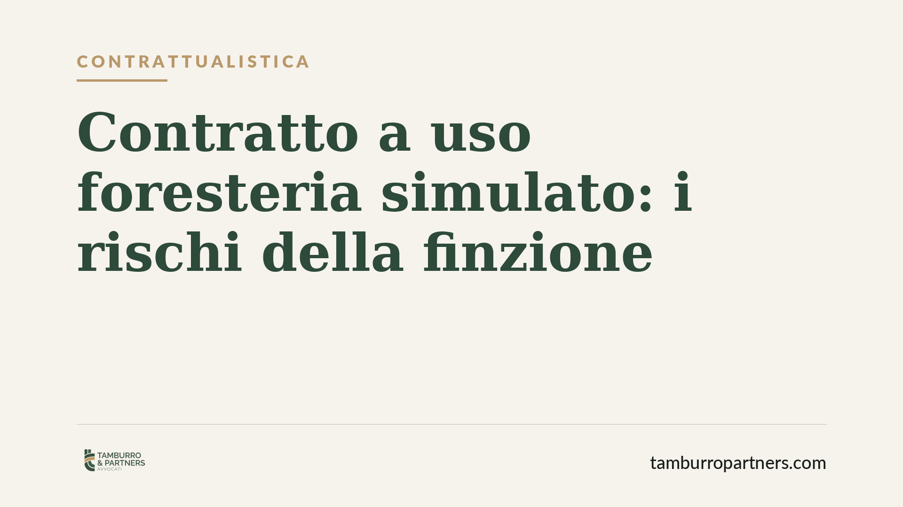

Contratto a uso foresteria simulato: i rischi della finzione
Il contratto a uso foresteria consente di locare un immobile a un'azienda per i propri dipendenti, con regole più flessibili rispetto alle locazioni abitative ordinarie. Ma quando la finalità aziendale è solo apparente, il contratto è simulato: se la simulazione emerge, il rapporto viene riqualificato con effetti rilevanti su durata e vincoli per il proprietario.

Il caso
Il contratto a uso foresteria è una locazione con cui un immobile abitativo viene concesso a un'impresa affinché vi alloggino suoi dipendenti o collaboratori. Rientra tra i contratti di natura non abitativa in senso stretto e sfugge quindi al regime protettivo delle locazioni a uso abitativo, in particolare allo schema di durata 4+4.
Il problema nasce quando questo schema viene utilizzato in modo strumentale: il proprietario e l'inquilino stipulano formalmente un contratto a uso foresteria, ma la reale esigenza è quella abitativa di una persona fisica, senza alcun collegamento con un'attività d'impresa. In questo caso si parla di contratto a uso foresteria simulato (o fittizio), figura che espone entrambe le parti a rischi concreti.
Inquadramento normativo
La disciplina generale della locazione è contenuta negli artt. 1571 e seguenti del Codice civile. Per le locazioni abitative interviene poi la Legge 431/1998, che impone la durata minima quadriennale rinnovabile per altri quattro anni (il cosiddetto schema 4+4) e, per i contratti a canone concordato, lo schema 3+2.
La foresteria si colloca fuori da questo perimetro perché presuppone un utilizzatore diverso dal conduttore-persona fisica: l'immobile serve all'impresa per esigenze dei propri dipendenti. Se questo presupposto manca, il contratto è simulato. La simulazione può essere relativa — le parti hanno voluto un contratto diverso (una locazione abitativa) da quello dichiarato (la foresteria) — con l'effetto che, tra le parti, vale il contratto realmente voluto.
Secondo l'orientamento della giurisprudenza di legittimità, accertata la natura abitativa reale del rapporto, trova applicazione la disciplina vincolistica della Legge 431/1998, con conseguente assoggettamento alla durata minima e ai relativi vincoli. Va precisato che non esiste un automatismo sanzionatorio predeterminato: l'esito dipende dall'accertamento in concreto operato dal giudice.
L'onere della prova
Un profilo spesso trascurato riguarda chi deve dimostrare la simulazione. L'onere grava su chi la eccepisce — di regola l'inquilino che intende beneficiare della disciplina abitativa più protettiva. Trattandosi di simulazione, la prova può essere fornita anche per presunzioni.
I giudici valorizzano una serie di indici presuntivi: l'assenza di un effettivo rapporto di lavoro tra l'impresa conduttrice e chi occupa l'immobile, la coincidenza tra conduttore formale e occupante di fatto, il pagamento del canone da parte della persona fisica anziché dell'azienda, l'iscrizione della residenza anagrafica nell'immobile. Quanto più questi elementi convergono, tanto più la finalità aziendale risulta soltanto di facciata.
Discorso diverso vale per i contratti transitori disciplinati dall'art. 5 della Legge 431/1998, che rispondono a esigenze temporanee documentate: sono uno strumento legittimo e non vanno confusi con la foresteria simulata, purché ne ricorrano i presupposti reali.
Implicazioni pratiche
Per il proprietario immobiliare, il rischio principale è la perdita di flessibilità: un contratto pensato come temporaneo e svincolato può trasformarsi in una locazione abitativa soggetta a durata minima, con vincoli su recesso e disdetta molto più stringenti. A questo si aggiunge il possibile recupero di imposte e sanzioni sul piano fiscale.
Per l'azienda che presta il nome, l'esposizione riguarda la coerenza tra dichiarazioni contrattuali e realtà del rapporto. Per l'inquilino, invece, l'accertamento della simulazione può risolversi in un vantaggio, aprendo l'accesso alla tutela abitativa.
Cosa fare in concreto
- Verificare la destinazione reale dell'immobile prima della stipula: la foresteria è legittima solo se esiste un'effettiva esigenza aziendale di alloggiare dipendenti o collaboratori.
- Documentare il presupposto aziendale: conservare il rapporto di lavoro tra impresa conduttrice e occupante, le delibere o gli atti che giustificano l'uso foresteria.
- Intestare correttamente il pagamento del canone all'impresa conduttrice, evitando che sia la persona fisica occupante a versarlo.
- Gestire con attenzione la residenza anagrafica: la registrazione della residenza dell'occupante nell'immobile è uno degli indici più valorizzati per smascherare la simulazione.
- Valutare strumenti alternativi legittimi, come il contratto transitorio ex art. 5 L. 431/1998, quando l'esigenza è realmente temporanea e documentabile.
La distinzione decisiva resta quella tra nome e sostanza del contratto: ciò che conta non è l'etichetta apposta al negozio, ma l'assetto di interessi effettivamente perseguito dalle parti.
Contributo informativo a cura di Tamburro & Partners Avvocati – Avv. Giuseppe Tamburro. Non costituisce parere legale.
Ogni contratto ha il suo equilibrio.
Se vuoi una revisione delle clausole o una redazione su misura, scrivi allo studio. Ti rispondiamo entro un giorno lavorativo.